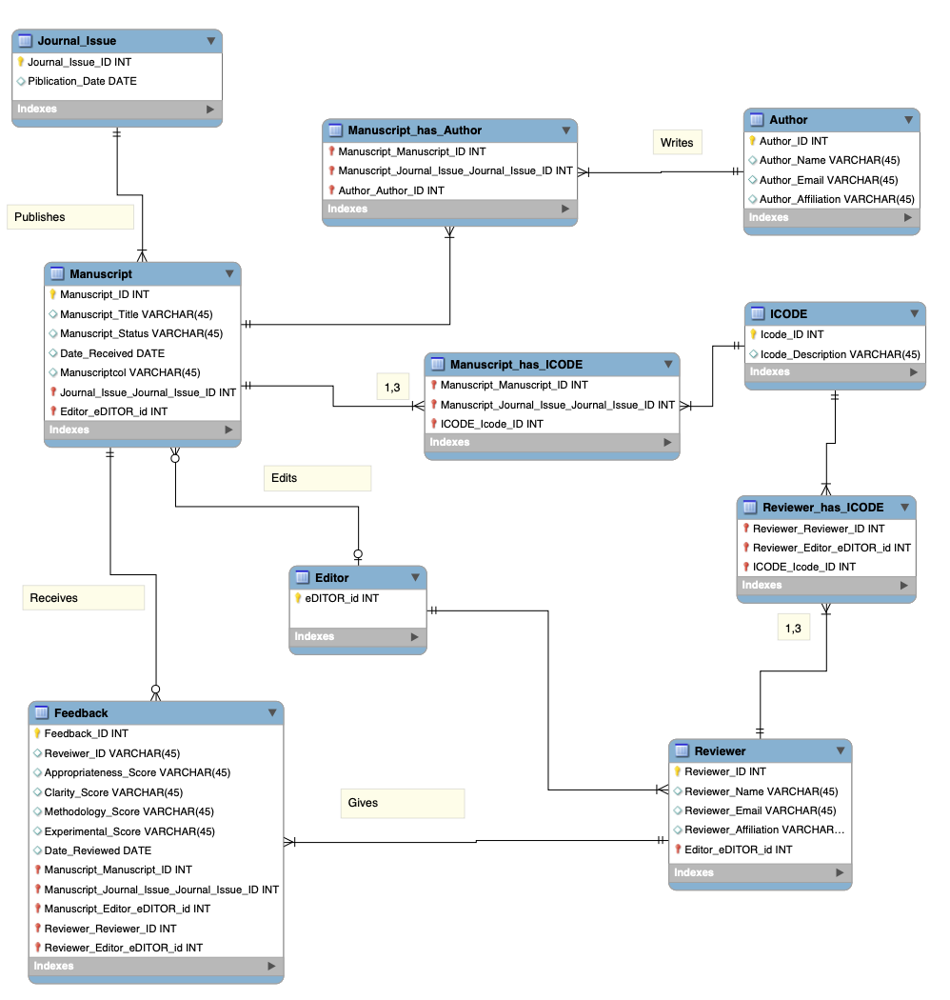
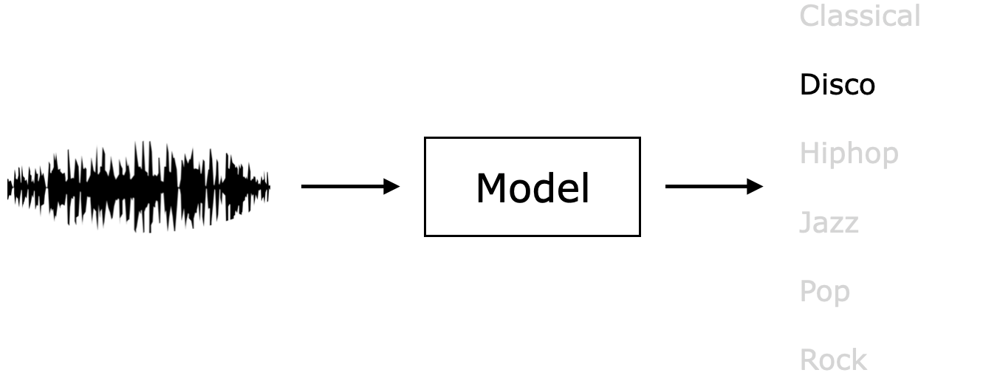
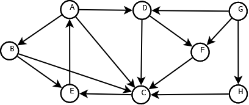
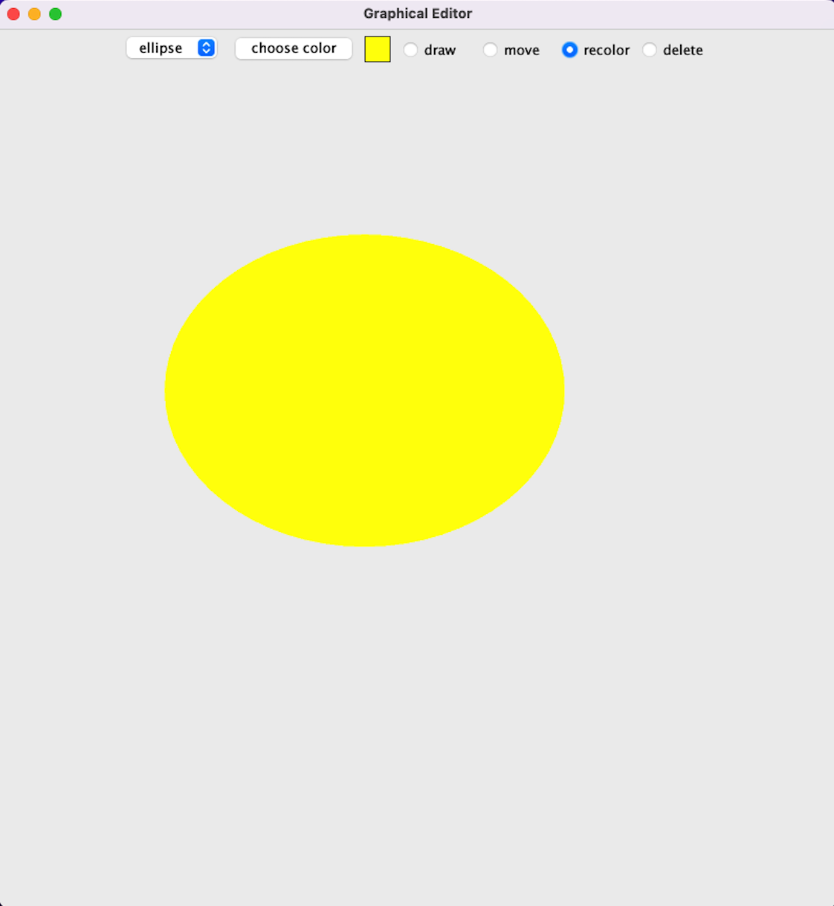
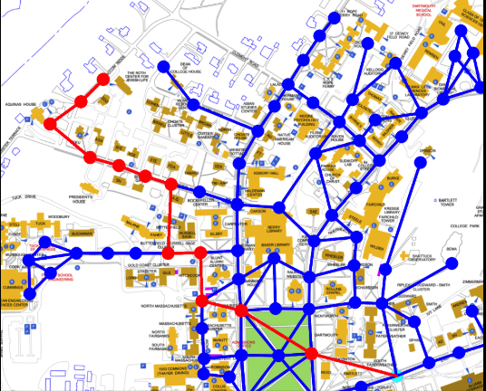
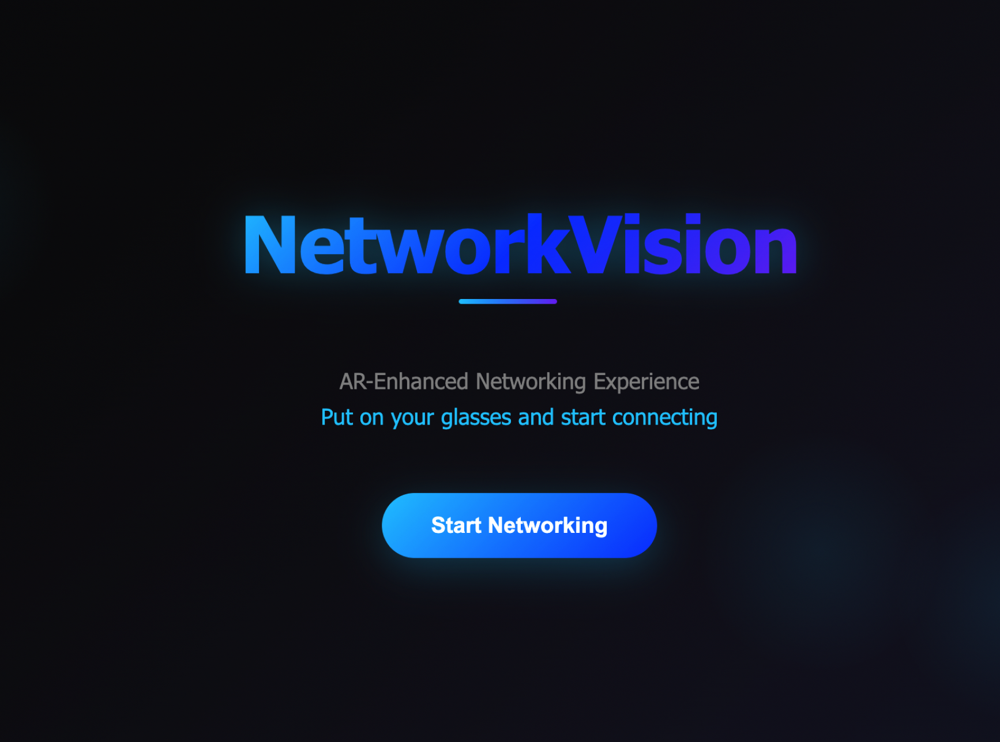
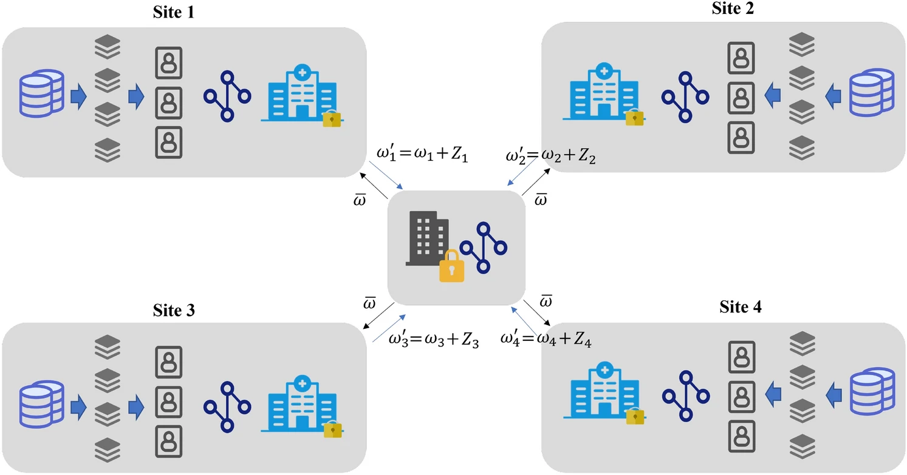
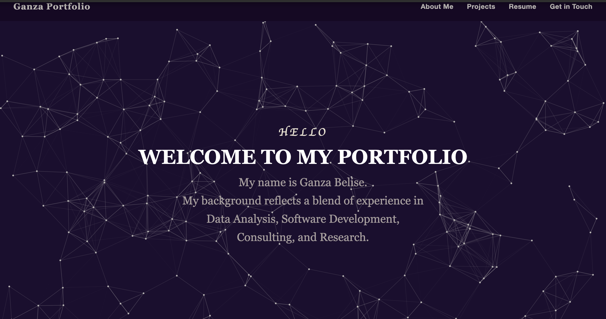

Recent Projects

MySQL-Based Manuscript Management System
Database | SQL, ER Diagrams, Business Logic

fMRI Music Genre Classifier
Machine Learning | Python, Scikit-learn

Six Degrees of Separation
Graph Theory | Java, BFS

Collaborative Graphical Editor
Java | Multithreading, Sockets

Map Pathfinder
Algorithms | Java, BFS
Huffman Encoding
Data Compression | Trees, Encoding

Halo Team Networking Glasses
UX Research + Visual Design

Blogpost Management Application
Python| MongoDB| Dictionaries

Federated learning
Machine Learning| Healthcare| Research

Portfolio Website
HTML| CSS